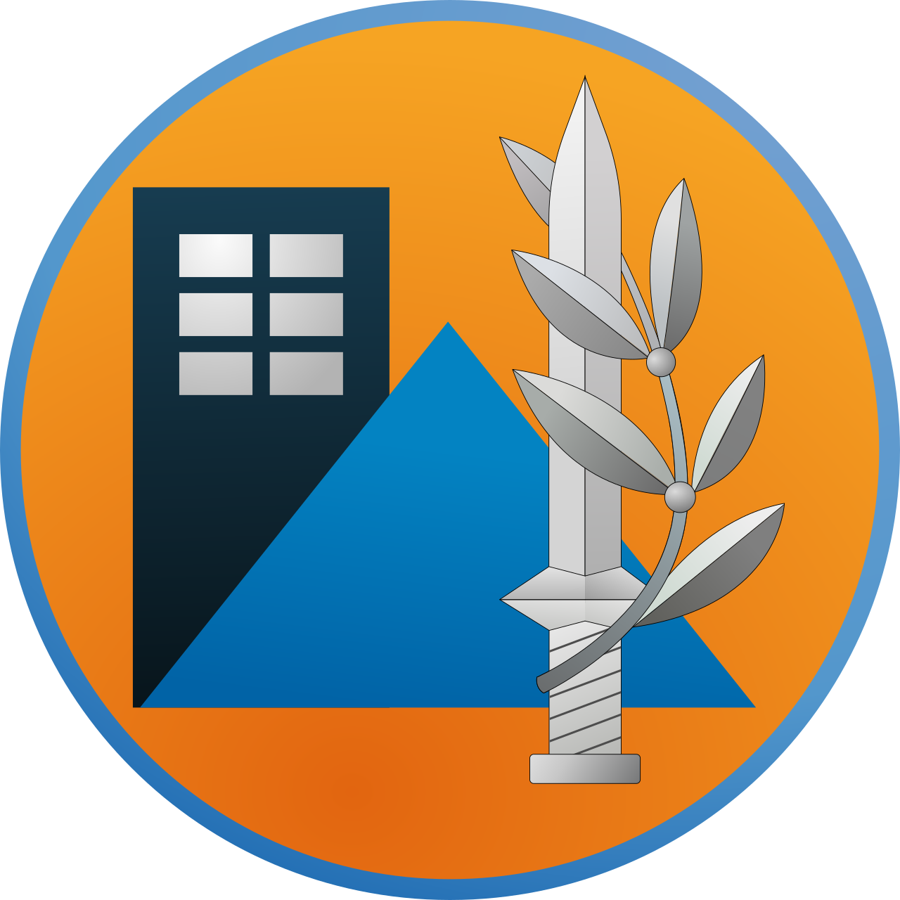

This is supposed to be my last year of computer studies.
But to my complete surprise
I woke up suddenly to the sound of my phone alarms and the news that "we attacked Iran."
On the one hand, it was surprising and a little stressful to enter another combat system,
especially after the last two years.
However, it can be considered half-consolation
that students like me will have more time to fill in gaps and close in on the material
the most important this is to listen to the instructions
of the Home Front Command to make sure everyone return to the normal routine.

made by Hen Mandelbaum